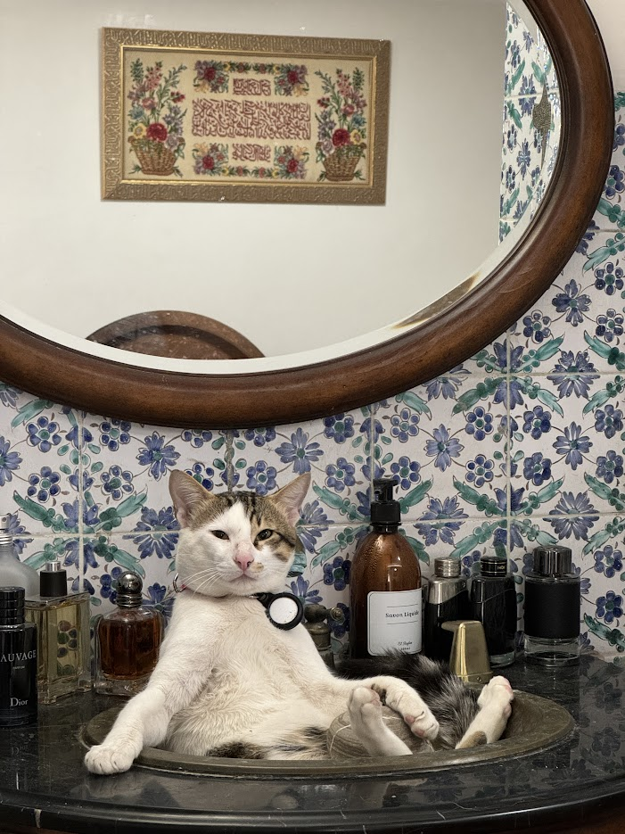
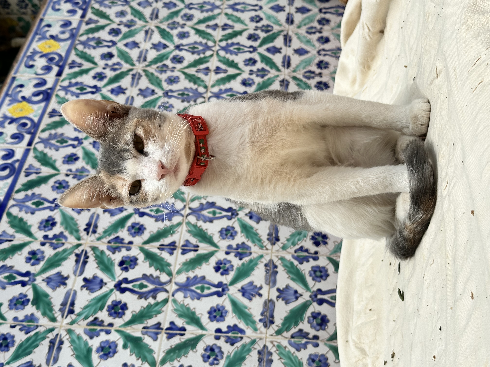
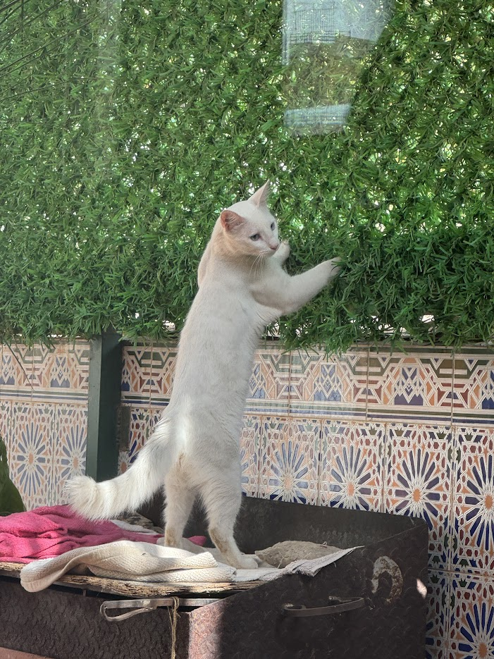

strlink

Mirou est un chat au pelage soyeux, d'un gris argenté parsemé de quelques taches blanches. Ses yeux, d'un vert émeraude profond, brillent d'une lueur espiègle qui trahit son caractère joueur. De taille moyenne, il a une silhouette élégante et agile, toujours prête à bondir sur un jouet ou à grimper aux rideaux. Son museau rose est orné de longues moustaches blanches qui frémissent à chaque mouvement. Ses oreilles, toujours aux aguets, pivotent au moindre bruit, captant les sons les plus infimes de son environnement. Sa queue, longue et touffue, se balance gracieusement lorsqu'il marche, telle une plume au gré du vent. Mirou est un chat affectueux qui aime se blottir sur les genoux de son maître, ronronnant doucement pour exprimer son contentement. Cependant, il garde une certaine indépendance et n'hésite pas à partir explorer le jardin, à la recherche d'aventures félines.
Mimia est une chatte ravissante au pelage bicolore. Son corps est principalement blanc, avec des taches grises élégantes sur la tête et le dos, lui donnant un motif unique et charmant. Sa fourrure semble douce et bien soignée. Mimia a une tête ronde typique des chats domestiques, avec de grands yeux expressifs d'une couleur ambrée ou dorée qui fixent directement l'objectif. Son regard transmet une impression de curiosité et d'intelligence. Ses oreilles de taille moyenne à grande sont dressées et alertes, lui donnant un air vif et attentif. On peut voir ses longues moustaches blanches qui ajoutent à son charme félin. Mimia est assise sur ce qui semble être une étagère ou un rebord en bois, dans une posture légèrement accroupie. Ses pattes avant sont repliées sous elle, suggérant qu'elle est à l'aise mais prête à bouger si quelque chose attire son attention. Le corps de Mimia paraît svelte et bien proportionné, indiquant qu'elle est probablement jeune et en bonne santé. L'expression de son visage et sa posture donnent l'impression que Mimia est alerte, curieuse et peut-être un peu méfiante ou prudente face à l'appareil photo. Le contraste entre le pelage clair de Mimia et l'arrière-plan coloré (le mur carrelé bleu et vert) la met particulièrement en valeur, créant une image très esthétique.
Toura est un magnifique chat blanc, élégant et svelte. Son pelage immaculé brille sous la lumière, contrastant avec le décor coloré qui l'entoure. Dans cette photo, Toura se tient debout sur ses pattes arrière, étirant son corps gracieux vers le haut. Ses pattes avant sont levées, comme s'il tentait d'atteindre quelque chose au-dessus de lui - peut-être une feuille ou un insecte qui a attiré son attention. Cette posture montre sa curiosité et son agilité naturelle. Les yeux de Toura, bien qu'on ne puisse pas clairement en distinguer la couleur, semblent fixés sur un point d'intérêt hors champ. Ses oreilles pointues sont dressées, attestant de sa vigilance. Toura se trouve sur ce qui semble être un rebord ou une surface surélevée, recouverte d'un tissu clair. Derrière lui, on aperçoit un mur décoré de carreaux aux motifs géométriques complexes, typiques de l'art islamique ou marocain. Au-dessus, une abondante végétation verte apporte une touche naturelle à la scène.
Ceci est un texte en gras utilisant span.
Ceci est un texte important utilisant strong.
liens vers tourastrlink